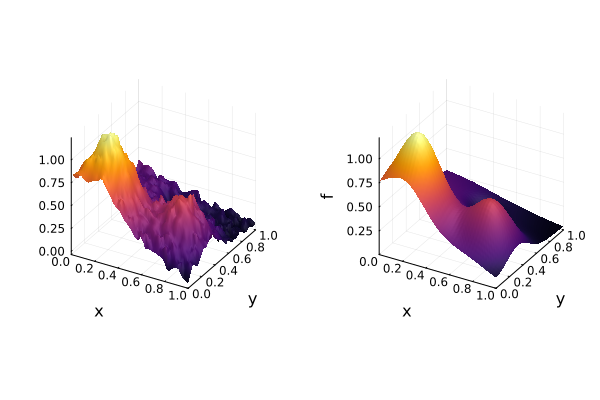
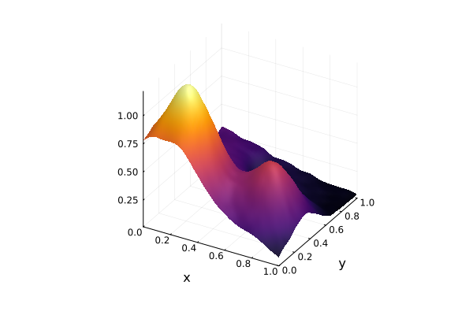
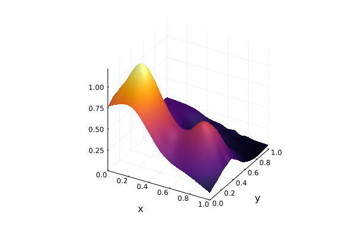

Dealing with noisy data
This tutorial is based on Chapter 19 of [Fasshauer2007] and will show how we can use regularization techniques and least-squares fitting to deal with noisy data. Most of the code for this tutorial is also available in the two examples interpolation/regularization_2d.jl and interpolation/least_squares_2d.jl.
Define problem setup and perform interpolation
We start by defining a simple two-dimensional interpolation problem. We will use the famous Franke function as the target function and add some noise to the function values. The Franke function is defined as
\[f(x, y) = \frac{3}{4}\exp\left(-\frac{(9x - 2)^2}{4} - \frac{(9y - 2)^2}{4}\right) + \frac{3}{4}\exp\left(-\frac{(9x + 1)^2}{49} - \frac{9y + 1}{10}\right) + \frac{1}{2}\exp\left(-\frac{(9x - 7)^2}{4} - \frac{(9y - 3)^2}{4}\right) - \frac{1}{5}\exp\left(-(9x - 4)^2 - (9y - 7)^2\right).\]
As nodes for the interpolation, we choose a random set of 1089 points in the unit square.
using KernelInterpolationfunction f(x) 0.75 * exp(-0.25 * ((9 * x[1] - 2)^2 + (9 * x[2] - 2)^2)) + 0.75 * exp(-(9 * x[1] + 1)^2 / 49 - (9 * x[2] + 1) / 10) + 0.5 * exp(-0.25 * ((9 * x[1] - 7)^2 + (9 * x[2] - 3)^2)) - 0.2 * exp(-(9 * x[1] - 4)^2 - (9 * x[2] - 7)^2)endN = 1089nodeset = random_hypercube(N; dim = 2)values = f.(nodeset)values_noisy = values .+ 0.03 * randn(N)1089-element Vector{Float64}:
0.3029049824044999
0.007118725125058973
0.04528860376616182
0.36231409887713417
0.06938707784711891
0.5253175040142275
0.0654540527922201
0.28170151680198113
0.16846343115636345
0.45715714515305583
⋮
0.8234771666095931
0.0697488633332993
0.12864620798372187
0.12288083055950072
0.27978542413709045
0.2354269635244437
1.139597953635973
0.8901401014907848
0.10459333154882247As kernel, let's use the ThinPlateSplineKernel, which uses linear augmentation. We start by performing the interpolation based on the noisy data.
kernel = ThinPlateSplineKernel{dim(nodeset)}()itp = interpolate(nodeset, values_noisy, kernel)Interpolation with 1089 nodes, kernel ThinPlateSplineKernel{2}() and polynomial of order 2.We plot the resulting interpolation and compare it to the original Franke function.
using Plotsp1 = surface(itp, colorbar = false)p2 = surface(homogeneous_hypercube(40; dim = 2), f, colorbar = false)plot(p1, p2, layout = (1, 2))
We can see that the interpolation looks much rougher than the original Franke function. This is expected since we fit the noisy data too closely. Therefore, we would like to find a way how to stabilize the approximation and reduce the influence of the noise.
Use regularization to stabilize the approximation
The first possibility to stabilize the approximation is to use regularization. One of the simplest regularization techniques is the L2-regularization (or also known as ridge regression). One way to motivate the L2-regularization is to consider the interpolation problem as a minimization problem. We can write the interpolation problem as
\[\min_{c \in \mathbb{R}^N} \frac{1}{2}c^TAc\]
subject to the constraint $Ac = f$, where $A$ is the interpolation matrix and f the function values. This problem can be solved with the help of Lagrange multipliers and it turns out the solution simply is $c = A^{-1}f$ as we already know. The idea of L2-regularization is to relax the condition $Ac = f$ and instead of enforcing the equality, we penalize the deviation from the equality by adding the L2-norm of the difference. This leads to the minimization problem
\[\min_{c \in \mathbb{R}^N} \frac{1}{2}c^TAc + \frac{1}{2\lambda}\|Ac - f\|_2^2.\]
Computing the gradient of this expression with respect to $c$ and setting it to zero, we obtain the regularized solution
\[c = (A + \lambda I)^{-1}f\]
assuming the regularity and symmetry of the interpolation matrix $A$. The parameter $\lambda$ is a regularization parameter that controls the trade-off between the interpolation error and the regularization term. The larger $\lambda$ is, the more the interpolation is regularized, which leads to a smoother approximation. In practice, this means that we only change the interpolation matrix by adding a constant to the diagonal. Note that the polynomial augmentation is not affected by the regularization. In KernelInterpolation.jl, we can pass a regularizer to the interpolate function.
λ = 0.01itp_reg = interpolate(nodeset, values_noisy, kernel, regularization = L2Regularization(λ))Interpolation with 1089 nodes, kernel ThinPlateSplineKernel{2}() and polynomial of order 2.Plotting the regularized interpolation, we can see that the approximation is much smoother than the unregularized interpolation and thus much closer to the underlying target function.
surface(itp_reg, colorbar = false)
We compare the stability of the regularized and unregularized interpolation by looking a the condition numbers of the two system matrices.
using LinearAlgebraA_itp = system_matrix(itp)A_itp_reg = system_matrix(itp_reg)cond(A_itp), cond(A_itp_reg)(1.4374214054457164e8, 14904.18153846781)We can see that the condition number is drastically reduced from around 1.5e8 to 1.5e4 by using regularization. This means that the regularized interpolation is much more stable and less sensitive to the noise in the data.
Use least-squares approximation to fit noisy data
As an alternative to using regularization, we can also use least-squares fitting to approximate the noisy data. The idea of least-squares approximation is to use another set of nodes to construct the RBF basis than we use for the interpolation. This means we construct another NodeSet consisting of the centers for the basis functions, which is smaller than the nodeset we use for the interpolation. If the nodeset is given by $X = \{x_1, \ldots, x_N\}$ and the centers are $\Xi = \{\xi_1, \ldots, \xi_M\}$ with $M \le N$, we obtain a rectangular system matrix $A\in\mathbb{R}^{N\times M}$ with $A_{ij} = K(x_j, \xi_k)$ for $j = 1, \ldots, N$ and $k = 1, \ldots, M$. The overdetermined system $Ac = f$ can be solved by the least-squares method. Again, only the kernel matrix part is affected by the least-squares approximation and the polynomial augmentation is not changed. In KernelInterpolation.jl, we can pass centers to the interpolate function.
M = 81centers = random_hypercube(M; dim = 2)ls = interpolate(centers, nodeset, values_noisy, kernel)Interpolation with 1089 nodes, kernel ThinPlateSplineKernel{2}() and polynomial of order 2.We plot the least-squares approximation and, again, see a better fit to the underlying target function.
surface(ls, colorbar = false)
Finally, we compare the error of the three methods to the true data without noise:
values_itp = itp.(nodeset)values_itp_reg = itp_reg.(nodeset)values_ls = ls.(nodeset)norm(values_itp .- values), norm(values_itp_reg .- values), norm(values_ls .- values)(0.9485050519627003, 0.27177587974773215, 0.29888694210213995)which confirms our findings above as the errors of the stabilized schemes are smaller than the error of the unregularized interpolation. Note that we did not put much effort in optimizing the regularization parameter or the number of centers for the least-squares approximation and that there is still room for improvement.
- Fasshauer2007Fasshauer (2007): Meshfree Approximation Methods with Matlab, World Scientific, DOI: 10.1142/6437.